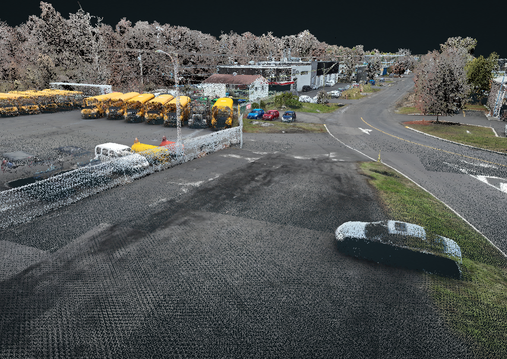
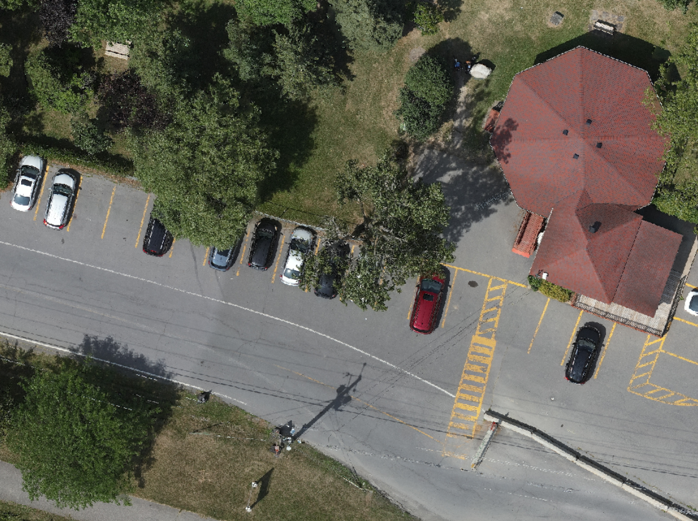

Acquisition, traitement et diffusion de données
Nos services couvrent l'intégralité du cycle de vie de la donnée géospatiale.
Arpentage
LiDAR, photogrammétrie et levés conventionnels combinés selon la précision recherchée et les contraintes du site.

Relevés topographiques
Acquisition de données de haute précision sur le terrain pour la modélisation et l'ingénierie.

Modèle numérique de terrain
Création de MNT détaillés pour une compréhension parfaite et précise de la topographie.
Photogrammétrie de haute précision
Génération d'orthophotographies et de photomaillages texturés de très haute résolution.
Relevés LiDAR
Acquisition de nuages de points par systèmes aéroportés (drone), mobiles et statiques.
Données géospatiales fiables
Production et livraison de données certifiées servant de base solide à vos projets.
Outils de calcul sur mesure
Développement de solutions d'analyse et de calcul adaptées à vos besoins spécifiques.
Prises de mesures complexes
Déploiement de technologies adaptées pour les environnements difficiles d'accès ou complexes.
Secteur Minier
Suivi volumétrique des réserves, documentation des fronts d'exploitation et planification du sautage, avec un historique consultable campagne après campagne.
Calculs des réserves
Évaluation par drone, scan laser ou méthode traditionnelle, selon le lieu et les conditions d'entreposage.
Orthophotos d'exploitation
Imagerie aérienne régulière pour documenter et assurer le suivi visuel de l'exploitation.
Calculs de dynamitage
Analyses volumétriques et spatiales pour l'optimisation des opérations de forage et de sautage.
Bathymétrie
Levés topographiques sous-marins pour les bassins de rétention et cours d'eau miniers.
Application Web conviviale
Plateforme dédiée pour la consultation, la comparaison d'historique des données, et la prise de mesures précises.
Exportation DAO
Extraction et intégration fluides de vos données vers des formats standards de conception (DWF, DWG).
Génie Civil et Construction
De l'avant-projet au tel que construit : modèles de terrain, analyses hydrologiques et suivi de chantier documenté à chaque étape des travaux.
Relevés d'infrastructures
Relevés topographiques de haute précision dédiés aux ouvrages d'art et infrastructures existantes.
Modélisation du relief
Génération de modèles numériques de terrain (MNT), de canopée (MNC) et d'élévation (MNE).
Analyses hydrologiques
Études de bassins versants, calculs rigoureux des pentes et détection de micro-dépressions.
Plans tel que construit
Documentation exacte de l'état final des structures et infrastructures après les travaux.
Suivi de chantier
Documentation régulière et calculs de déblais/remblais pour contrôler l'avancement des travaux.
Jumeau numérique 2D/3D
Visite virtuelle de votre chantier avec des outils intégrés pour la prise de mesures précises à distance.
Architecture et Bâtiment
Numérisation des conditions existantes et conversion en maquette exploitable, du nuage de points brut au modèle BIM livré dans le format de votre chaîne de production.
Scan laser & Nuages de points
Numérisation millimétrique des bâtiments pour capturer les conditions existantes avec une fidélité absolue.
Modèles 3D photogrammétriques
Création de modèles texturés de très haute résolution pour une visualisation réaliste des structures.
Scan-to-BIM
Vectorisation des nuages de points pour la création de maquettes intelligentes (Revit, IFC, DWG).
Jumeaux numériques immersifs
Environnement interactif combinant la réalité (nuages de points/modèles 3D) et le modèle conçu (maquettes BIM).
Inspections de bâtiments (Loi 122)
Solution clé en main : orthofaçades haute résolution, détection préliminaire de déficiences par IA, outils d'annotation et rapports automatisés.
Environnement
Capture sous couvert végétal, bathymétrie et modélisation du relief pour documenter un milieu naturel et en mesurer l'évolution.
Données géospatiales fiables
Acquisition de données de confiance et ultra-précises pour supporter vos analyses environnementales.
LiDAR par drone et Orthophotos
Déploiement de capteurs permettant de percer la végétation, couplés à une imagerie aérienne haute définition.
Modèles de terrain et canopée
Génération de modèles numériques révélant la vraie topographie du sol et la structure végétale.
Bathymétrie
Levés topographiques sous-marins pour l'étude des lits de cours d'eau, des berges et des lacs.
Calculs volumétriques
Évaluation précise des volumes de matériaux pour les projets de réhabilitation ou d'érosion.
Analyses spatiales
Création experte de cartes des pentes et modélisation des directions d'écoulement des eaux.
Municipalités
Inventaire des actifs, structuration des bases de données spatiales et diffusion cartographique pour appuyer la planification du territoire.
Inventaire des actifs
Collecte systématique et géolocalisation précise des données pour la gestion des infrastructures municipales.
LiDAR et Orthophotos
Acquisition de données par LiDAR (aérien et terrestre) et génération d'imagerie aérienne du territoire.
Analyses spatiales du territoire
Études géospatiales avancées pour supporter la planification urbaine et la prise de décision.
Automatisation de données (ETL)
Mise en place de solutions d'intégration (ETL) pour transformer et automatiser vos flux de données spatiales.
Bases de données spatiales
Création, structuration, et gestion optimale de vos données géographiques centralisées.
Jumeaux numériques urbains
Cartographie Web interactive et développement de solutions sur mesure selon les besoins de la ville.